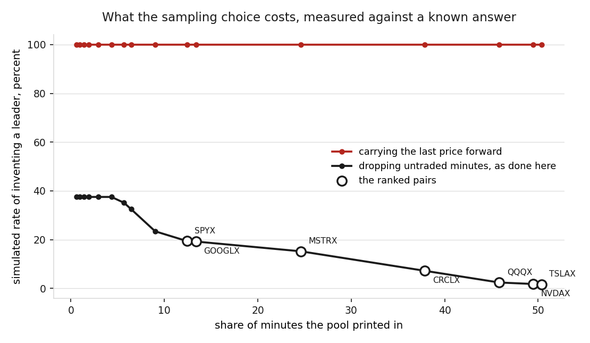
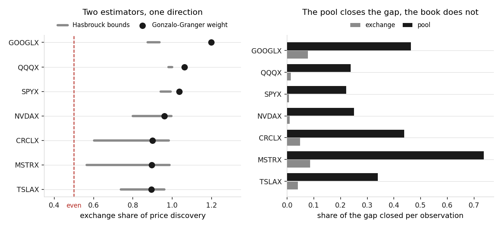
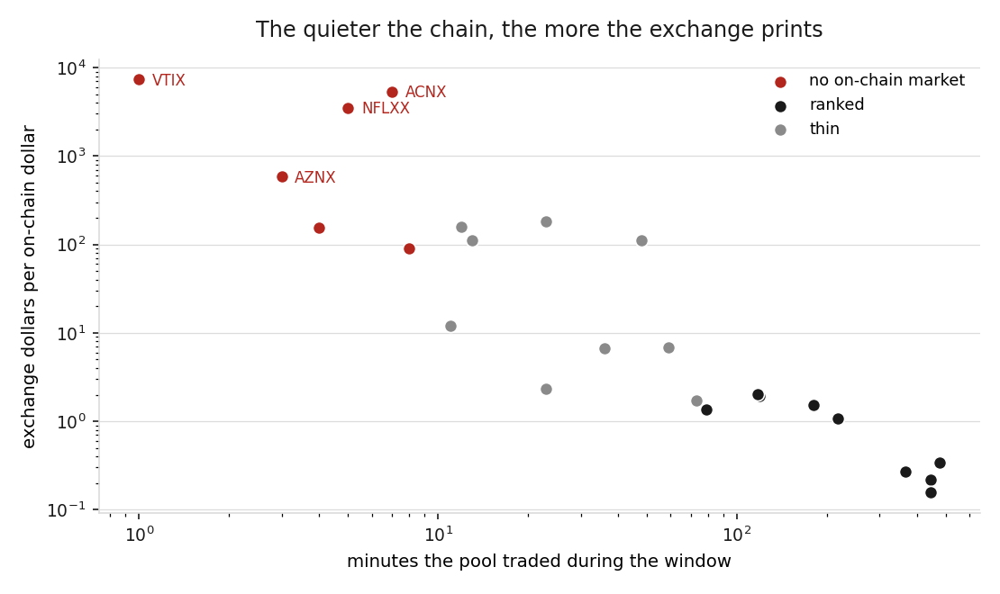

24 xStocks quoted at once on Gate and in Solana pools. The exchange sets the price in 21 of 23 rankable pair-days, the quieter a token's pool the more the exchange prints against it, and the exceptions are named. Collected daily, 29 to 31 July 2026.
Every way the result could have been an artefact, and what the check returned. All of it runs from the committed data; the per-check counts come from the first day's series pass, and the last row spans all three days.
| question | how it was answered | result |
|---|---|---|
| Are the two series cointegrated at all | augmented Dickey-Fuller on each spread | stationary in 7 of 7 |
| Does imposing a one-for-one error term matter | cointegrating vector fitted instead | same leader in 7 of 7 |
| Does a second estimator agree | Hasbrouck information shares | same direction in 7 of 7 |
| Can the token's own data support it | block bootstrap over the fitted rows | exchange ahead in 99% to 100% of resamples |
| Could sparse pool trading have invented it | simulation with the pool as known leader | error 2% to 19% at these fill rates |
| Does the answer depend on the lag order | refitted at 1, 3, 5 and 10 lags | leader changes in 0 of 7 |
| Does it depend on the minute grid | refitted on five-minute bars | same leader in 7 of 7 |
| Does it survive different days | collection repeated daily through 31 July | led in every window ranked, 7 of 8 tokens |
A pool that does not print every minute can look like a follower through sampling alone. Measured against a simulation where the pool is the known leader: carrying its last price forward invents the finding almost always, dropping the untraded minutes does not.

Read the speed columns rather than the weights. A weight is a ratio of two similar numbers and is noisy; the speeds are ordinary coefficients. Hasbrouck bounds and the bootstrap come from the series pass.
| token | exchange weight | exchange corrects | pool corrects | Hasbrouck bounds | bootstrap lead | paired minutes |
|---|---|---|---|---|---|---|
| TSLAX | 0.89 | -0.04 | 0.34 | 0.74 to 0.96 | 100% | 503 |
| NVDAX | 0.96 | -0.01 | 0.25 | 0.80 to 1.00 | 100% | 493 |
| QQQX | 1.06 | +0.01 | 0.24 | 0.98 to 1.00 | 100% | 457 |
| CRCLX | 0.90 | -0.05 | 0.44 | 0.60 to 0.98 | 99% | 378 |
| MSTRX | 0.90 | -0.09 | 0.74 | 0.56 to 0.99 | 100% | 244 |
| GOOGLX | 1.20 | +0.08 | 0.46 | 0.88 to 0.94 | 100% | 134 |
| SPYX | 1.03 | +0.01 | 0.22 | 0.94 to 0.99 | 100% | 124 |

The correlation prints between -0.94 and -0.93 across the three days, recomputed each day from that day's own volume snapshot. 7 of 8 tokens rankable in more than one window lead in every window they appear in; the two that break ranks, TSLAX near even on the third day and AMZNX led by its pool, have their own paragraphs in the write-up.
| token | 29 July | 30 July | 31 July | span |
|---|---|---|---|---|
| SPYX | 1.03 | 1.05 | - | 0.01 |
| GLDX | - | 0.64 | 0.67 | 0.03 |
| QQQX | 1.06 | 1.01 | 0.92 | 0.15 |
| MSTRX | 0.90 | 0.91 | 0.72 | 0.18 |
| NVDAX | 0.96 | 0.77 | 0.76 | 0.20 |
| GOOGLX | 1.20 | 0.94 | - | 0.26 |
| CRCLX | 0.90 | 0.72 | 0.61 | 0.29 |
| TSLAX | 0.89 | 0.92 | 0.47 | 0.44 |

Not evidence that these prints are fake. Evidence that nothing outside the exchange could tell you either way.
| token | minutes the pool traded | exchange 24h | on-chain 24h | on-chain liquidity |
|---|---|---|---|---|
| VTIX | 1 | $29,243 | $4 | $1,329 |
| AZNX | 3 | $35,041 | $60 | $3,674 |
| UNHX | 4 | $82,147 | $535 | $11,379 |
| NFLXX | 5 | $116,413 | $33 | $6,003 |
| ACNX | 7 | $127,448 | $24 | $225 |
| MCDX | 8 | $81,439 | $900 | $14,551 |